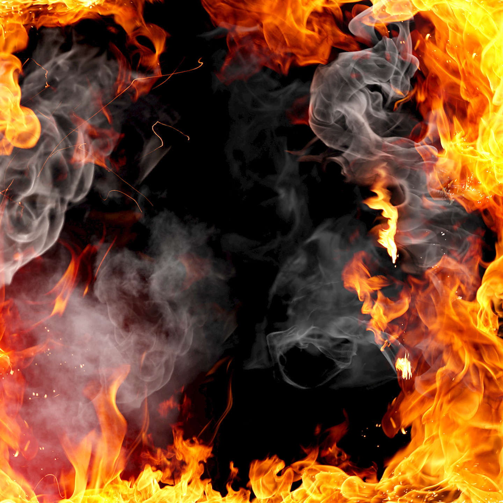
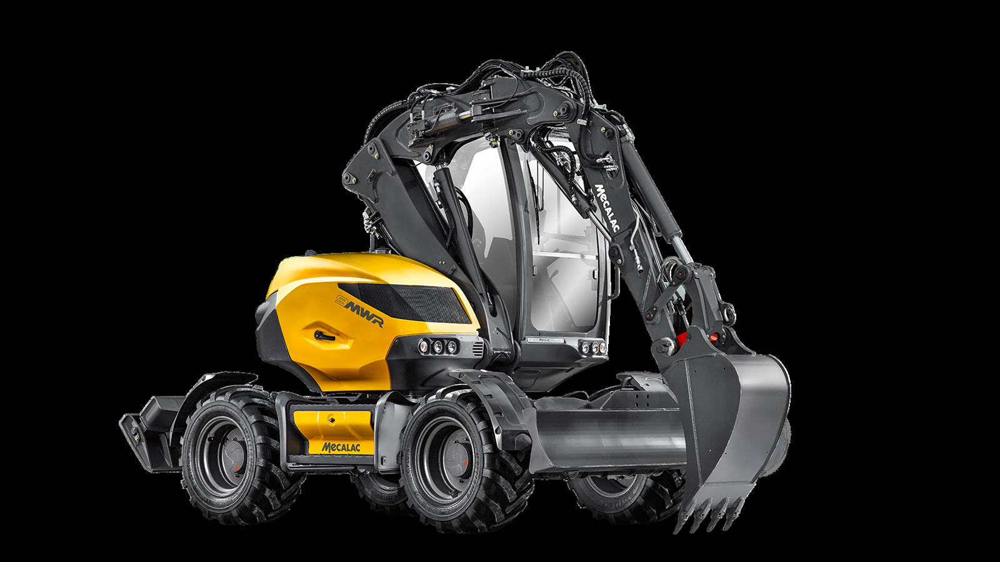
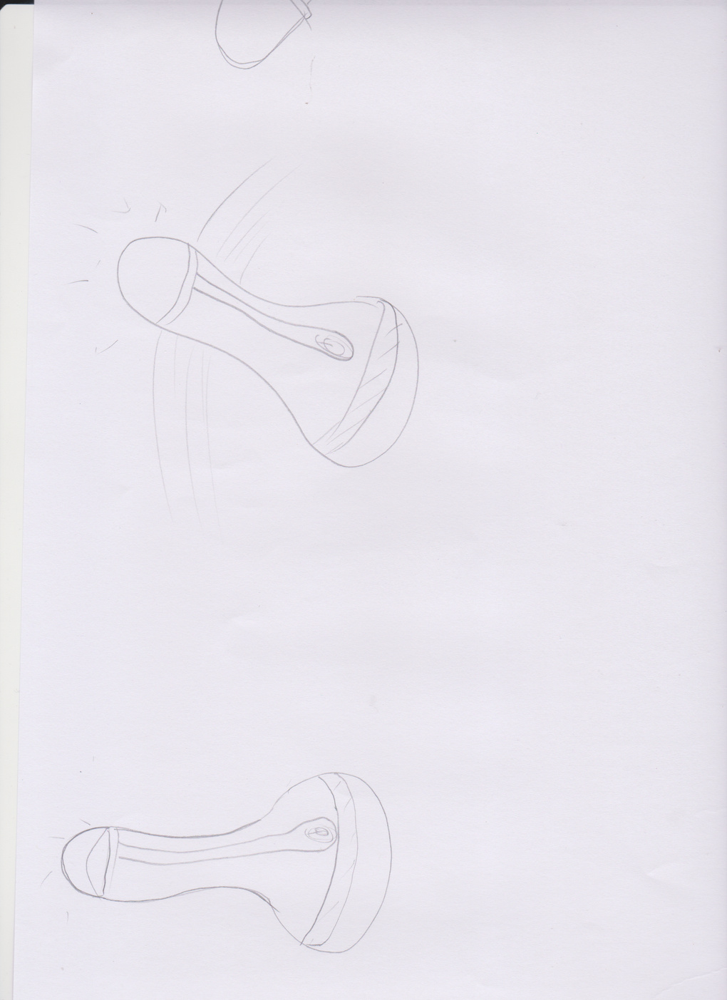
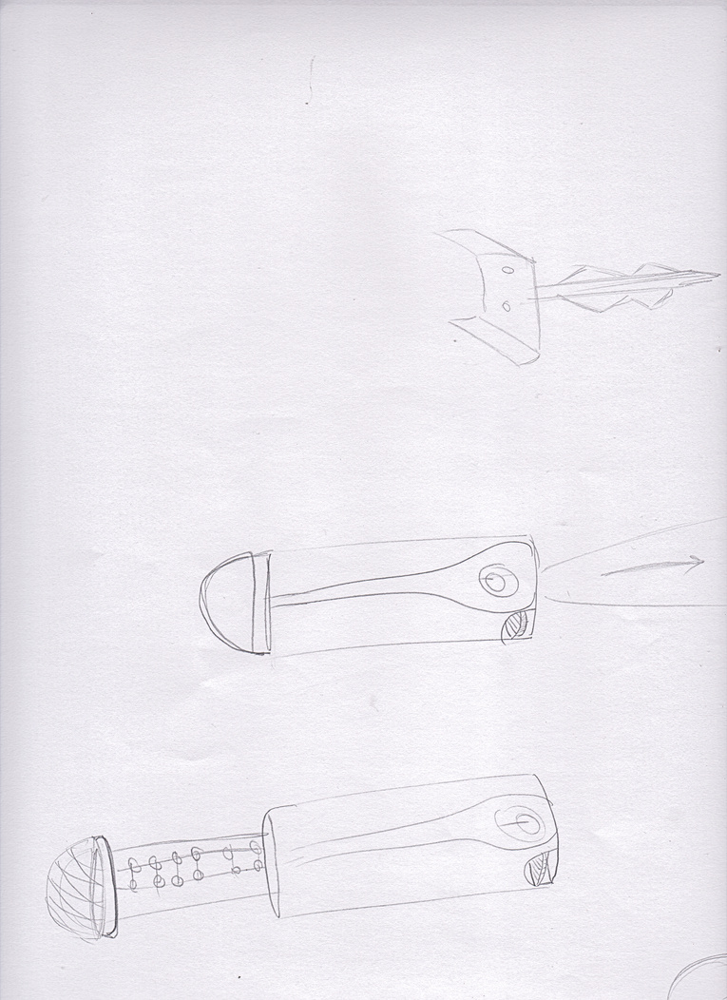
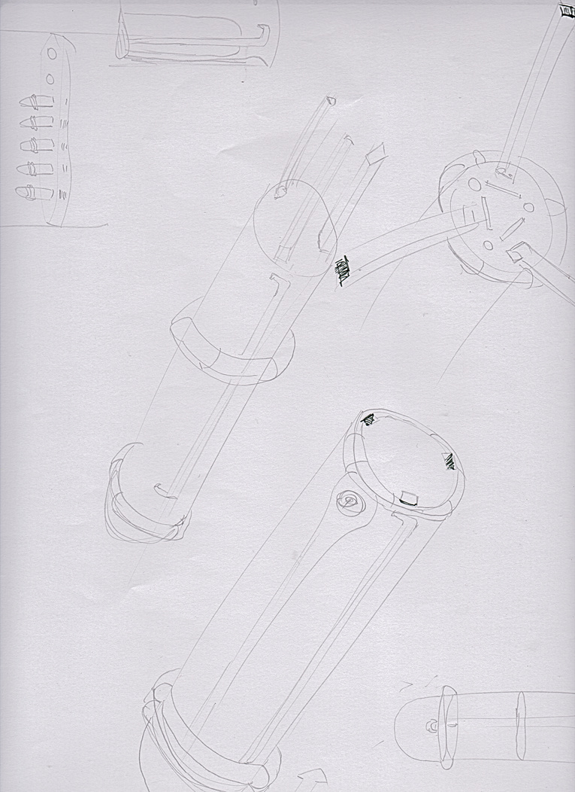
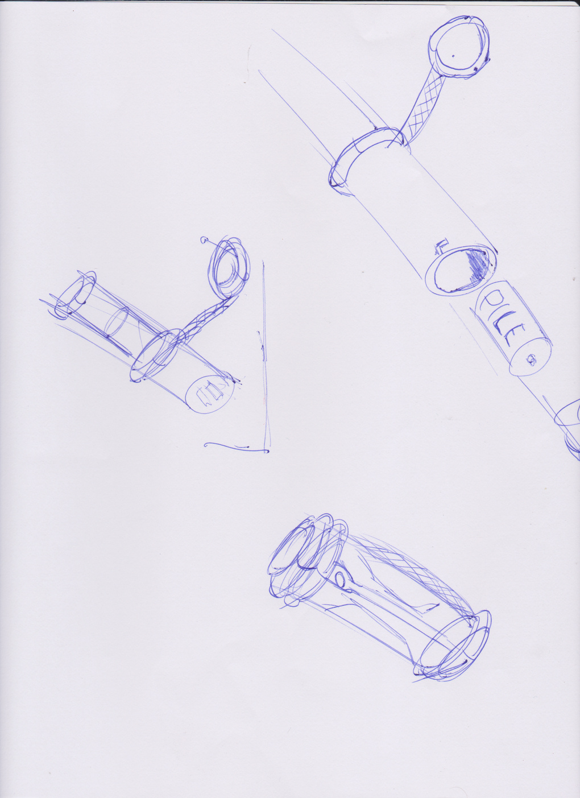
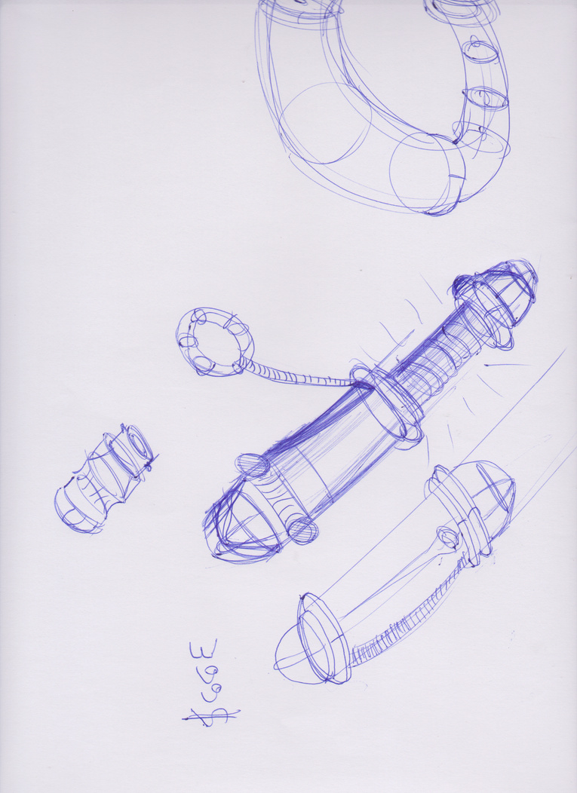

DI82 — P2024 · Design industriel
Conception d'une lampe de travail portable pour la marque Mecalac — polyvalente atelier/bureau, batterie amovible, intensité et température de lumière réglables.
Mecalac, fabricant d'engins de chantier reconnu, souhaitait équiper ses ateliers et bureaux de luminaires à sa propre marque. Le brief : une lampe compacte, robuste, adaptée aux conditions de l'atelier tout en étant suffisamment élégante pour un bureau.
L'utilisateur doit pouvoir déplacer et orienter librement la source lumineuse, régler l'intensité et la température de couleur selon l'usage (travail de précision vs ambiance bureau), et retirer la batterie facilement pour la recharger ailleurs.
Le challenge principal était de réconcilier robustesse atelier et design bureau : finitions caoutchouc anti-choc côté atelier, lignes propres et sobres côté bureau. Le résultat est un produit à double identité, fidèle à l'univers Mecalac (jaune, noir, métal).






